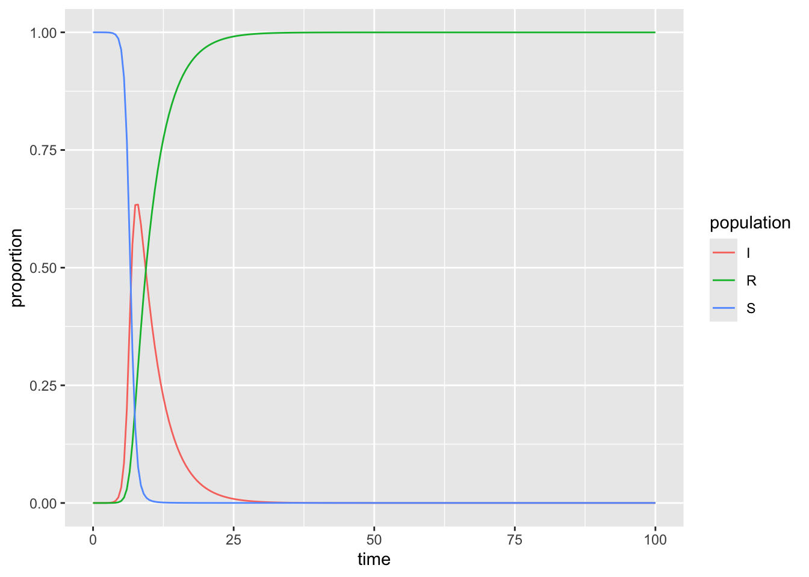

library(tidyverse)
library(deSolve)SIR Model Example
Day 3: Tasks & Activities
Credit:
This example is built on (and closely follows) this example presented by Dr. Aidan Findlater
The Susceptible-Infectious-Recovered (SIR) model is a mathematical model describing the spread of a novel pathogen through a population.
1. Load packages
2. Define parameters
# Proportion in each compartment: Susceptible 0.999999, Infected 0.000001, Recovered 0 (these are directly from the example linked above) ----
init <- c(S = 1-1e-6, I = 1e-6, R = 0.0)
# beta: infection parameter; gamma: recovery parameter ----
parameters <- c(beta = 2.316, gamma = 0.261)
# time frame ----
times <- seq(0, 100, by = 0.5)3. Create the function with the differential equations:
# Build the function with all ----
sir <- function(time, init, parameters) {
with(as.list(c(init, parameters)), {
dS <- -beta * S * I
dI <- beta * S * I - gamma * I
dR <- gamma * I
return(list(c(dS, dI, dR)))
})
}4. Approximate the solution using deSolve::ode():
# Solve using `deSolve::ode()` ----
approximation <- ode(y = init, times = times, func = sir, parms = parameters)5. Make it something we can plot:
# Get output into a data frame ----
approx_df <- as.data.frame(approximation)
# Pivot longer so R will do the work for us ----
approx_long <- approx_df %>%
pivot_longer(cols = S:R, names_to = "population", values_to = "proportion")6. Plot the output with ggplot:
ggplot(data = approx_long, aes(x = time, y = proportion)) +
geom_line(aes(color = population))